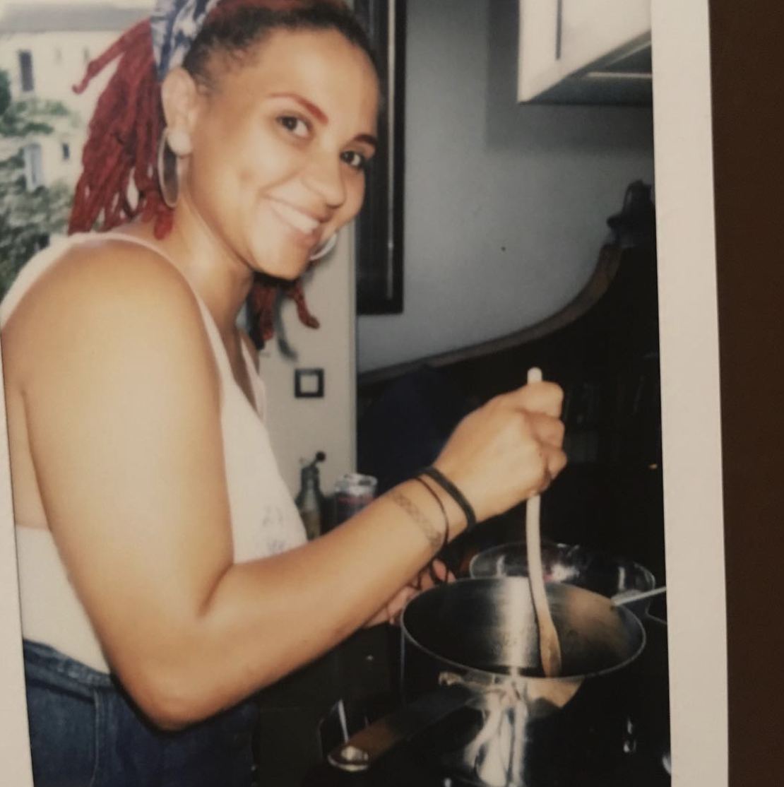

I like making art, cooking, playing video games, and learning new things.
Cooking has to be my favorite hobby because I do it everyday! I grew up in sunny San Diego, California. As a mixed child of a French mother and Sierra Leonean father, I was exposed to thier favorite foods which soon became mine. Growing up in many of the cities all over San Diego and in the mexican community, the Mexican culture and food has always made me feel at home.
I left San Diego to move to Nantes, France in 2014. I was able to nurture great relationships with family that had been long overdue but when it came to good home cooked meals, I had to be inivative. Now, I live in Paris and have better access to imported ingredients that truly give a meal its authenticity. I love to share and spread love through a good meal.
